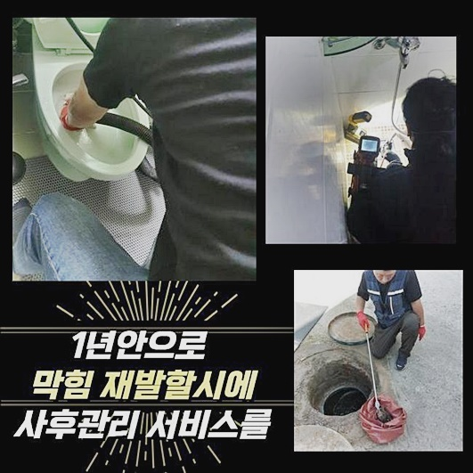
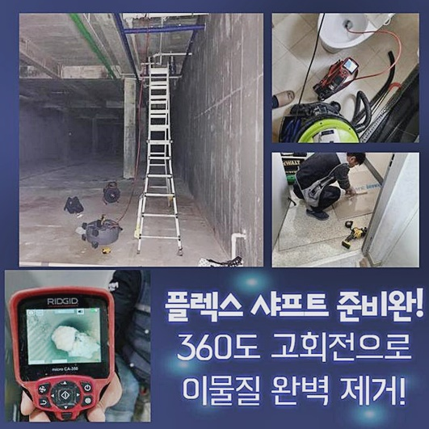
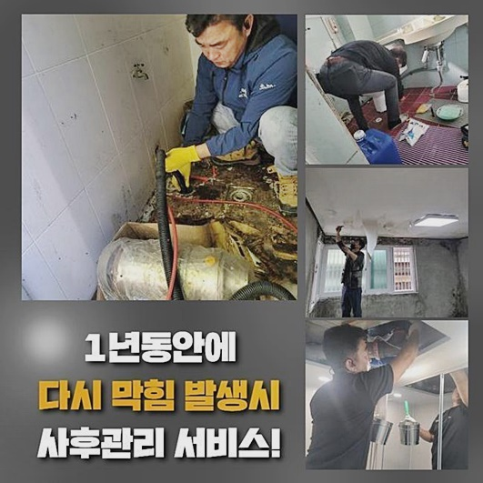
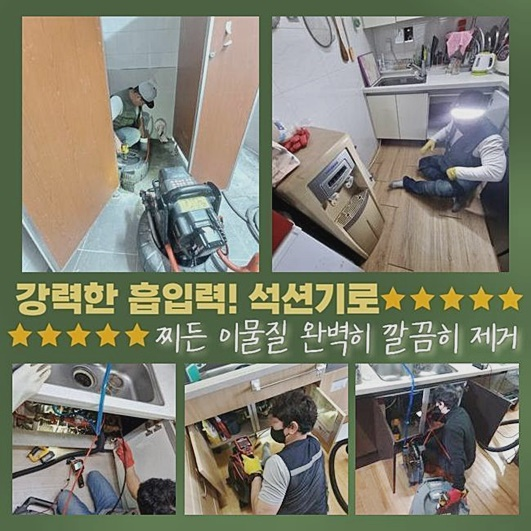
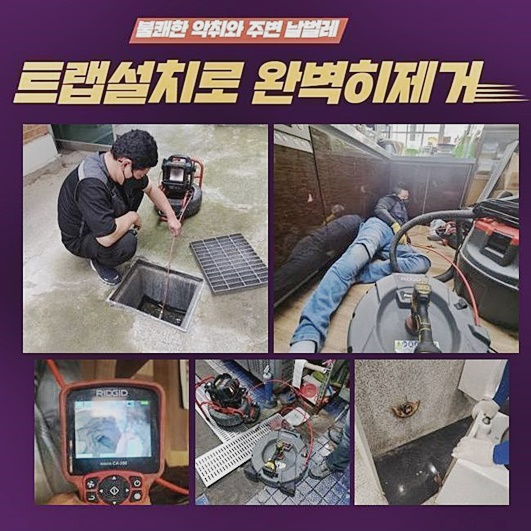
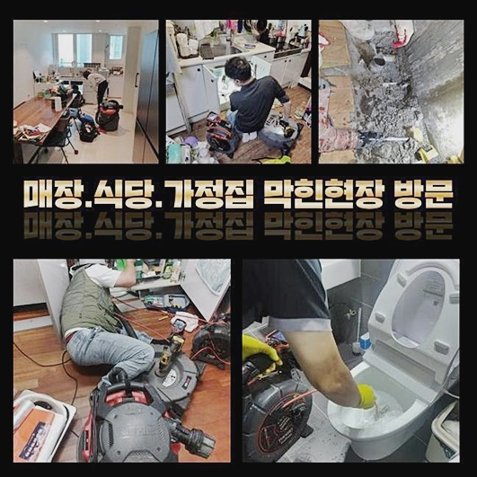
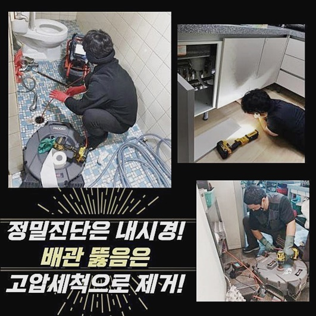

🏠 부천 성곡동욕실역류 신흥동 고압세척비용 설비공사
용인 하수구막힘 전문 시공 후기

📋 작업 개요
- 위치: 용인
- 서비스 유형: 하수구막힘, 배관막힘, 역류해결, 배관청소, 고압세척, 설비공사, 악취차단
- 작업 일시: 2024. 9. 21. 11:20
- 업체명: 하수구수사대 (010-5615-2118)
🔍 문제 상황
부천 성곡동욕실역류 신흥동 고압세척비용 설비공사
다양한 환경 내에서 하수구의 고장으로 다수의 액상 세제를 부어봤으나 그다지 효과가 없어서 어떻게 해야하나 망설이시는 분들이 어려움을 겪고 계세요
관련 지식이 부족하다면 시설물의 구조와 속성에 빠삭한 전문진에게 지원을 요청하려는 결정이 어려움을 극복하는데 가장 바람직한 방법이 됩니다
이 문제에 처음 직면하시는 분들이라면 안타깝게도 어떤 업체에 맡길지 오리무중이라서 방향을 잃어버린 느낌이 드는 분도 상당수 계실 것입니다
이번 사례를 참고하셔서 관련한 인사이트와 대응법을 알아가셨으면 좋겠네요
오늘 처치를 해드린 장소는 하수구 막힘으로 가정에서 물을 공급하면 이동성 없이 누적되기만 하는 이슈로 고생을 하시는 증세라고 사전 접수를 했어요
물이 정상 속도를 유지하며 방출되지 않고서 되려 지속적으로 머문다면 통상적으로 관로 구조 내에 노폐물이 상당량 확충이 되는 문제로 빚어지는 경우입니다
현장마다 다르기에 개별 원인을 알아차린 다음 시행하는 것이 무결점으로 막힘 오류를 마무리 짓는 노선입니다
무슨 상황인지 살펴본 후에 오물이 배관 구조 중에서도 근방에 정체하고 있는지 체크하려고 하수관을 개방해서 보았습니다
관로에 침전물들이 어마어마하게 끼어 있음을 인지할 수 있었는데요
단일 관로가 아닌 교차로의 이상이라고 보였으나 확실히 확립을 하고자 어두운 심연도 신속하게 중계를 해주는 카메라 기계를 동작시킵니다

🔎 원인 분석
💡 전문가 진단: 정밀 진단 장비를 사용하여 슬러지의 고착 여부를 판명하고 타격/세척 작업을 실시했습니다.
배관 저 안쪽까지 카메라 장치를 쭉쭉 내려봤더니 방대한 양의 노페물들과 기름때가 끼어있었죠
적체량이 많다면 고객님께서 간소화된 많은 도구를 복합적으로 쓰더라도 미미한 흐름의 조정은 보인다고 치더라도 향후 재발될 것이 뻔합니다
현재 처한 상황에 따라서 설정하는 작업 기구도 변동성을 주는데 이번 케이스는 고압수로 씻는 장비를 택하여 처치했습니다
다수의 지점에서 정체하는 찌꺼기들을 동시에 긁어 없애줄 작업을 들어가야겠다고 판단했을 만큼 범주도 넓고 악화된 모습이었어요
고압세척 장비를 작동시켜서 세정을 시작하면 원통에서 오염된 하수도 범람할 수 있고 그 부위에서 고인 것들이 순식간에 빠질 것이니 뜰채나 흡수력 기반의 석션도 마련했어요
배수로가 노후됐으면 내구성도 약해지기 마련이니 상황에 맞는 알맞은 힘으로 세심하게 조정하는 능력도 반드시 있어야만 합니다
관로의 말끔한 청소 실시를 끝마쳤다면 확실한 검증을 하려고 배관 카메라를 넣어 다시 둘러보면서 철두철미하게 처리됐나 사감처럼 깐깐하게 봐요
끝났다고 서둘러 마무리하지 않고 새로 발견된 이상 징후는 없는지 끊임없이 확인을 거듭하니 재발이 일어나지 않아요
같은 날 예약이 된 현장의 수로의 복원을 제공해 드리려고 속히 근처에 있던 하수구 설치장소로 갔습니다
멀쩡한 기능이 이어지던 하수 배출이 불통이 되어 지속적인 역류의 징후도 빚어지는 케이스였어요
보통의 빌라나 아파트는 여러 세대들이 모여 살면서 배출되어온 이물질과 하수가 속에 고이면서 불통되는 환경을 조성해요
문제를 분석해야하므로 부패된 오염물질이 고정되어 있을 게 뻔한 내부의 환경을 진단합니다

🔧 작업 과정
특화된 기술력의 카메라로 확인해보니 바깥으로 나아가는 연결라인이 말썽이라는 사실을 알아차리게 되었는데요
배관의 자체적인 모양이 구부러진 상황이었고 다른 곳에서 이동하는 배관들과 만나는 접합부가 다발적이라고 보였어요
파이프라인의 꼴과 현황에 대해 제대로 보지 않는다면 갑작스럽게 직면하는 트러블에 대처하지 못해요
재작업을 들어가야할 수 있으며 오류는 증폭되니 초기 진단을 할 때 혼을 모두 쏟고 있어요
원인 확증을 얻으려고 붙은 장소나 생성 시기를 추정했고 접합부위에 자리잡은 기름덩어리가 핵심임을 눈치챘습니다
기름때가 뭉쳐버린 슬러지는 고압의 물을 쏴서 묵은 때를 씻어준다면 수월하게 풀릴 문제로 보였어요
무작정 물을 쏘지 않고 우선 하수로의 구조적 특성을 두루 판단한 다음에 하수도 가까이 접근하여 드러나는 물질들부터 긁어내려가야 합니다
옥외로 향하는 라인에 맞닿은 구간이 바로 오류를 빚었기에 여기를 타격하여 오물을 걸어올려줬어요
바깥으로 가는 관로는 유연한 태도를 지니지 못한다면 감당하기가 난감한데 여러 포트폴리오를 갖고 있고 허가 문제까지 담당하니 걱정하실 필요가 없습니다
앞서 정한 방향에 맞게 배관 청소를 선행하고 안쪽에 잠재한 오물들 제거를 위해 고압수로 씻는 동작을 준비합니다
이와 같은 고압세척기는 거대한 마력을 활용하여 점성이 있거나 견고한 대상물들을 씻어내려주기 떄문에 올바르게 내외부 하수도 기능 회복을 달성하도록 돕습니다
여러 형태의 노즐과 전용 호스를 결합시킨 후 정해진 장소에 안착하고 딱봐도 고집스럽게 붙어있던 슬러지들을 빠르게 하나씩 처단했습니다
고압세척의 단계 사이사이에 카메라로 찍힌 스크린을 곧바로 알아보며 완수 정도를 체크했습니다
집중해서 세정을 해주고 마감에 들어갈지 봤더니 시원찮은 곳이 없어서 보완이 잘 이뤄졌음을 알게 됐습니다
청소 후의 사후 관리도 준수해야하는 포인트라서 사용법에 대한 조언도 해드리며 같은 경우가 빚어지면 빠르게 손 봐드리겠노라 확신시켜 드렸어요
하수도의 회복을 도와달라 하신다면 서둘러서 문제 현장으로 내방하여 수습해 드리며 세정을 받았으나 효과를 제공 받지 못한다면 아예 비용 부담은 드리지 않을 예정입니다
불현듯 막혀버리는 하수구는 갖가지 트러블에서부터 기인하며 현장별로 디테일이 차이점이 있으니 대응법도 천차만별입니다
여러 설비 사례들을 이겨낸 전적이 있고 상황별로 올바른 매뉴얼이 존재하니 물 흐르듯 진행됩니다!
배관의 생김새는 당연하고 노후화된 수준 등 고려가능한 모든 것을 종합해 가장 효과적인 수순을 밟습니다


✅ 작업 완료
이처럼 원인 분석을 숙지한 다음에 차근히 작업을 진행해야만 2차적 오류가 생기는 걸 막을 수 있어요
배수가 원천차단되는 현상은 평온한 생활 도중에 자주 찾아오는 불청객이에요
배출되고 남아야 할 속도로 물이 배출되는 찝찝하다고 느낄 징후가 있을 것입니다
수도설비를 활용하시다가 묘하게 퇴보한 듯 보일 때 증세만 가볍게 설명주시면 의외로 정말 손쉽게 본래 기능으로 회복시켜 드립니다
늦은 시간이라고 하더라도 연락만 주신다면 얼른 달려 나가겠습니다




⚠️ 하수구 배관 막힘 예방 및 관리 가이드
- ✅ 머리카락, 비닐, 물티슈 등 물에 분해되지 않는 이물질은 하수구 유입을 절대 금지해 주세요.
- ✅ 하수구 거름망을 씌우고 모여진 이물질은 주기적으로 쓰레기통에 바로 비워주셔야 합니다.
- ✅ 배관 노후가 심할 경우 이물질이 더 쉽게 걸리므로 주기적인 배관 세척(고압세척 등)을 권장합니다.
- ✅ 작업 후 1년 이내 재발 시 하수구수사대에서 무상 A/S 보증 서비스를 제공합니다.
💡 핵심 정리
- 확실한 장비 작업(내시경 점검 및 샤프트 스케일링)으로 원인을 뿌리 뽑습니다.
- 작업 후 1년 이내에 동일한 부위 재발 시 100% 무상 A/S 서비스를 보장합니다.
- 서울 · 경기 · 인천 전 지역에 24시간 언제든 긴급 출동할 수 있도록 항시 대기 중입니다.
❓ 자주 묻는 질문 (FAQ)
🚨 용인 하수구막힘 문제로 고민이신가요?
정확한 원인 진단과 확실한 시공으로 재발 없는 해결을 약속드립니다.
24시간 긴급 출동 | 서울 · 경기 · 인천 전지역 | 1년 내 재발 시 무상 A/S